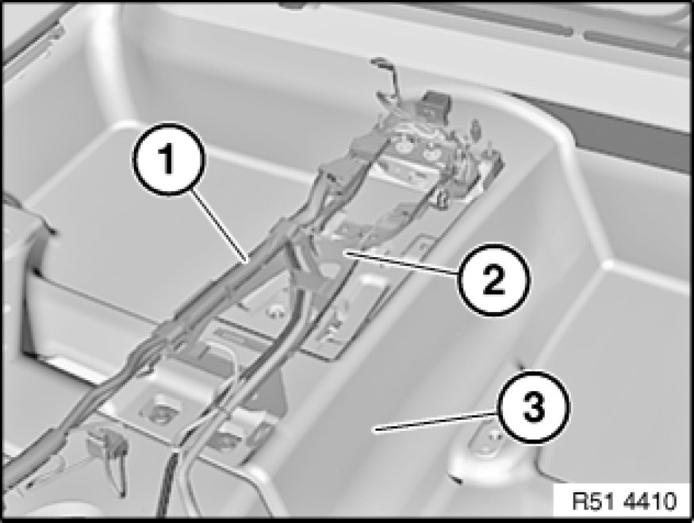

51 47 440 Removing and Installing/Replacing Rear Carpet on Seat Pan
51 47 440 - Removing and installing or replacing rear carpet on seat pan

Necessary preliminary tasks:
- Remove left/right front seat Removing and Installing Left or Right Front Seat (Normal / Manual)
- Remove rear seat Removing and Installing / Replacing Rear Seat
- Remove handbrake lever 34 41 000 Removing and Installing/Replacing Handbrake Lever
- Remove airbag control unit Service and Repair
- Remove inner entrance cover strips 51 47 000 Removing and Installing/Replacing Front (Inside) Left or Right Entrance Cover Strip
Version with central bass speaker:
- Remove central bass speaker trim Service and Repair on left/right
E87 only:
- Remove trim panel for left/right door pillars

E81/E82 only:
Lever out protective cap (1) on left/right.
Loosen left/right screw (2).
Tightening torque 72 11 05AZ Specifications.
Installation:
Check that spacer bushing (3) and rubber ring (4) are in correct position.

Pull back cable (1) with cable holder (2).
Feed out carpet (3) and remove.
Installation:
Make sure openings for air duct and attachment points are correctly positioned.